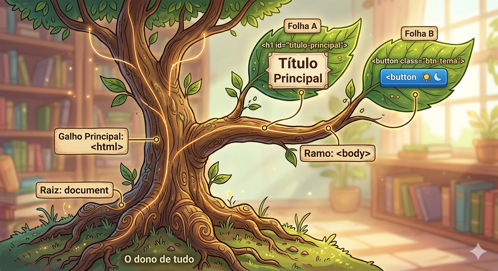
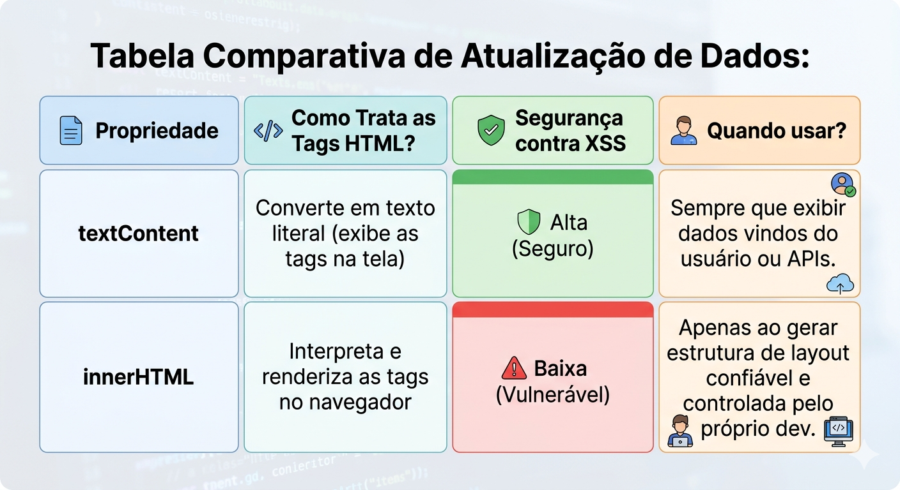
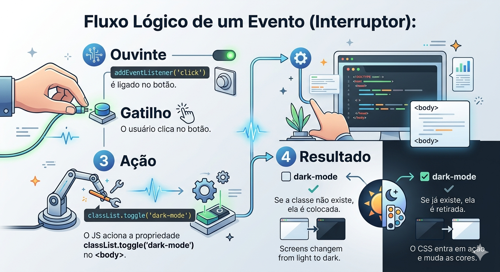

Aula 18
Manipulação do DOM - I
Descrição: Introdução à manipulação do Document Object Model (DOM) com JavaScript moderno. Abordagem de métodos de seleção (querySelector), atualização segura de conteúdo (prevenção de XSS com textContent), manipulação de classes CSS (classList) e ciclo de vida de eventos, culminando na implementação de um sistema reativo de Dark Mode.
Tópicos desta aula
querySelector
textContent e innerHTML
Eventos e classList
Dark Mode (Prática)
Aula 18
DOM
JavaScript
Abertura
Cenário Real:
Imagine que você foi contratado como Desenvolvedor Front-end por uma grande empresa de software corporativo.
Na sua primeira semana, o líder técnico apresenta um problema: o painel de controle do sistema principal é estático, cansativo para a visão (totalmente branco) e os usuários estão abandonando a plataforma em favor de concorrentes mais modernos.
Estatísticas recentes mostram que mais de 70% dos usuários de tecnologia preferem interfaces que ofereçam suporte ao Dark Mode (Modo Escuro), não apenas por estética, mas por acessibilidade e redução da fadiga visual.
Abertura
Cenário Real: (Continuação)
Hoje, deixamos de ser construtores de "documentos estáticos" e passamos a ser arquitetos de "interfaces vivas".
Vamos aprender a conectar a lógica do JavaScript com a estrutura do HTML, permitindo que a nossa aplicação reaja aos comandos do usuário em tempo real.
Abertura
Pergunta Mobilizadora:
Reflexão
"Antes de começarmos, pense: se você fosse o desenvolvedor responsável por criar um mural de recados dinâmico onde os usuários digitam mensagens que aparecem instantaneamente na tela para todos, qual seria o maior risco técnico ao pegar o texto do usuário e injetá-lo diretamente no código-fonte da página?"
A Ponte entre Lógica e Interface
A. CONCEITO
O Document Object Model (DOM) é a representação que o navegador faz do nosso código HTML quando carrega a página.
Ele transforma cada tag (como <body>, <div>, <button>) em um "objeto" (um nó) que o JavaScript consegue ler e modificar.
Sem o DOM, o JavaScript seria cego e surdo em relação à interface; ele não saberia o que está na tela nem poderia alterar nada.
A Ponte entre Lógica e Interface
A. CONCEITO (Continuação)
Para interagir com esses elementos, precisamos primeiro "buscá-los" no DOM.
O método mais moderno e flexível no mercado atual é o querySelector().
Em vez de decorar métodos antigos para IDs ou classes separadamente, o querySelector permite que usemos os mesmos seletores que já conhecemos do CSS (como .classe, #id, ou tag) para encontrar exatamente o elemento que precisamos manipular.
A Ponte entre Lógica e Interface
B. VISUALIZANDO
Imagine o DOM como uma Árvore Genealógica (Tree Structure): {ver img01.png}
- Raiz: document (O dono de tudo)
- Galho Principal: <html>
- Ramo: <body>
- Folha A: <h1 id="titulo-principal">
- Folha B: <button class="btn-tema">
A Ponte entre Lógica e Interface
B. VISUALIZANDO

A Ponte entre Lógica e Interface
C. EXEMPLO DE CÓDIGO
JavaScript
// Boas práticas: Armazenamos o elemento em uma constante (const)
// Usamos o seletor CSS de ID (#) para precisão e performance
const tituloPrincipal = document.querySelector('#titulo-principal');
// Usamos o seletor CSS de classe (.) para o botão
const botaoTema = document.querySelector('.btn-tema');
// Imprimimos no console para validar se selecionamos corretamente
console.log("Elemento selecionado:", tituloPrincipal);
A Ponte entre Lógica e Interface
D. EXPLICAÇÃO DO CÓDIGO
Na primeira linha, chamamos o objeto global document (que representa a página inteira) e usamos o método querySelector.
Passamos como argumento a string '#titulo-principal', instruindo o navegador a descer na árvore do DOM e retornar o primeiro elemento que possua esse ID.
Salvamos esse elemento na constante tituloPrincipal. Se usássemos o método antigo getElementById('titulo-principal'), o resultado seria o mesmo, mas o querySelector centraliza o padrão de busca.
A escolha de const garante que não vamos, por acidente, sobrescrever a referência a esse elemento durante a execução do programa.
A Ponte entre Lógica e Interface
E. DICA
DOM Caching
Dica: Sempre declare suas seleções de DOM no topo do seu arquivo JavaScript ou no início do escopo da sua função. Isso se chama "DOM Caching". Procurar elementos no DOM consome processamento; se você salvar o elemento em uma variável, o JavaScript não precisará varrer a página inteira toda vez que você quiser alterá-lo.
A Ponte entre Lógica e Interface
F. EXERCÍCIOS RÁPIDOS
- 1. O que significa a sigla DOM no contexto de desenvolvimento web?
- 2. Se você tem uma <div class="card">, qual o comando exato usando querySelector para selecioná-la?
- 3. Escreva um código simples que selecione uma tag <nav> e a guarde em uma constante chamada menuNavegacao.
- 4. Um júnior escreveu document.querySelector(btn-primario);. O código quebrou. Qual foi o erro de sintaxe?
- 5. Se existirem 5 elementos com a classe .item-lista na página, qual deles o document.querySelector('.item-lista') irá retornar?
Atualização Segura de Conteúdo
A. CONCEITO
Uma vez que selecionamos um elemento, o próximo passo é alterar o que está dentro dele.
Existem duas propriedades principais para isso: textContent e innerHTML.
O textContent lê e atualiza apenas o texto puro de um elemento, ignorando qualquer tag HTML inserida ali.
Já o innerHTML processa e renderiza o texto como código HTML real.
Atualização Segura de Conteúdo
A. CONCEITO (Continuação)
A escolha entre os dois não é apenas uma questão de preferência, mas uma exigência crítica de Segurança da Informação.
Se permitirmos que o usuário digite um texto (em um input) e jogarmos esse texto na tela usando innerHTML, um usuário mal-intencionado pode digitar um script malicioso (ex: <script>roubarSenhas()</script>), e o navegador irá executá-lo.
Isso é chamado de ataque XSS (Cross-Site Scripting). Como profissionais, nós usamos textContent sempre que lidamos com dados externos para garantir que o texto seja tratado estritamente como texto inofensivo.
Atualização Segura de Conteúdo
B. VISUALIZANDO
Tabela Comparativa de Atualização de Dados:

Atualização Segura de Conteúdo
C. EXEMPLO DE CÓDIGO
JavaScript
const perfilUsuario = document.querySelector('#nome-usuario');
const mensagemStatus = document.querySelector('#status');
// Simulação de dado vindo do banco de dados (seguro)
const nomeSeguro = "Maria Silva";
// Simulação de entrada de um usuário hacker (inseguro)
const inputHacker = "<img src='x' onerror='alert(\"Fui Hackeado!\")'>";
// USO CORRETO: textContent protege a aplicação. A tag será tratada como texto comum.
perfilUsuario.textContent = 'Bem-vinda, ${nomeSeguro}!';
// USO INCORRETO/PERIGOSO: innerHTML vai executar o evento onerror e disparar o alerta.
// Nunca faça isso com dados que você não controla!
mensagemStatus.innerHTML = inputHacker;
Atualização Segura de Conteúdo
D. EXPLICAÇÃO DO CÓDIGO
Ao atribuir a string à propriedade textContent de perfilUsuario, o navegador automaticamente "escapa" os caracteres especiais, garantindo que "Maria Silva" seja apenas renderizado na tela.
Na linha de mensagemStatus, ao usar innerHTML com a string inputHacker, o navegador tenta carregar uma imagem falsa (src='x') e, ao falhar, executa a injeção de JavaScript contida no atributo onerror.
Se estivéssemos gerando código com ferramentas de IA Generativa, elas frequentemente sugerem o uso de innerHTML por ser mais rápido para montar layouts complexos.
Cabe a nós, desenvolvedores, fazer o escrutínio crítico do código gerado pela IA e refatorar para opções seguras quando o dado for dinâmico.
Atualização Segura de Conteúdo
E. ATENÇÃO
Aviso de Segurança
Atenção! Nunca confie na entrada do usuário (Princípio de Zero Trust). Se você precisa inserir HTML dinamicamente de forma segura, evite o innerHTML. Na próxima aula, aprenderemos sobre createElement para criar elementos complexos de forma estruturada e 100% segura.
Atualização Segura de Conteúdo
F. EXERCÍCIOS RÁPIDOS
- 1. Explique com suas palavras a diferença fundamental entre textContent e innerHTML.
- 2. O que é um ataque XSS e como ele ocorre no front-end?
- 3. Escreva um código que altere o texto de um elemento com ID #mensagem para "Processamento concluído!" de forma segura.
- 4. Identifique o erro técnico e de segurança: divComentarios.innerHTML ="< p >" + comentarioDigitado + "< /p >";
- 5. Em que cenário específico você justificaria o uso de innerHTML em um projeto corporativo?
Interatividade
A. CONCEITO
Até agora, modificamos o DOM logo que a página carrega. Mas sistemas reais reagem ao que o usuário faz: um clique, uma digitação, o movimento do mouse.
Para isso, utilizamos Eventos (addEventListener). Nós instruímos o JavaScript a "ficar escutando" um elemento específico e, quando uma ação ocorrer, ele dispara uma função.
Uma das ações mais comuns atreladas a cliques é a mudança de estado visual.
Interatividade
A. CONCEITO (Continuação)
Em vez de injetar estilos diretamente pelo JavaScript (o que fere as boas práticas de separação de responsabilidades), nós usamos a propriedade classList.
Com o classList, podemos adicionar (add), remover (remove) ou alternar (toggle) classes CSS no nosso elemento. O CSS continua responsável pela aparência, e o JavaScript atua como o "interruptor" que liga ou desliga essa aparência de forma inteligente.
Interatividade
B. VISUALIZANDO
Fluxo Lógico de um Evento (Interruptor):
- Ouvinte: addEventListener('click') é ligado no botão.
- Gatilho: O usuário clica no botão.
- Ação: O JS aciona a propriedade classList.toggle('dark-mode') no <body>.
- Resultado: Se a classe não existe, ela é colocada. Se já existe, ela é retirada. O CSS entra em ação e muda as cores.
Interatividade
B. VISUALIZANDO
Fluxo Lógico de um Evento (Interruptor):

Interatividade
C. EXEMPLO DE CÓDIGO
JavaScript
// 1. Selecionamos os atores da nossa interação
const botaoTema = document.querySelector('#btn-tema');
const corpoPagina = document.querySelector('body');
// 2. Criamos a função que será executada (lógica do negócio)
function alternarTema() {
// toggle é inteligente: adiciona se não tem, remove se já tem
corpoPagina.classList.toggle('tema-escuro');
// Feedback visual para o usuário
if(corpoPagina.classList.contains('tema-escuro')) {
botaoTema.textContent = "Mudar para Claro";
} else {
botaoTema.textContent = "Mudar para Escuro";
}
}
// 3. Conectamos o evento ao elemento.
// Nota: Passamos o nome da função SEM os parênteses ()
botaoTema.addEventListener('click', alternarTema);
Interatividade
D. EXPLICAÇÃO DO CÓDIGO
Primeiro, isolamos os elementos que precisamos (btn-tema e o body). Depois, encapsulamos nossa lógica na função alternarTema().
O coração dessa lógica é classList.toggle(), que elimina a necessidade de fazermos Ifs complexos para verificar se a classe existe antes de adicioná-la ou removê-la.
Por fim, usamos addEventListener no botão. O primeiro parâmetro é uma string dizendo qual evento escutar ('click'). O segundo é a referência da função que será chamada.
Se colocássemos alternarTema(), a função rodaria sozinha na hora que a página abrisse, sem esperar o clique.
Interatividade
E. DICA
Separação de Responsabilidades
Dica: Separação de Responsabilidades (SoC - Separation of Concerns) é ouro no mercado. Seu JavaScript não deve ter códigos como elemento.style.backgroundColor = "black". Deixe as regras visuais no arquivo .css (ex: .tema-escuro { background: #121212; }) e use o JavaScript apenas para injetar ou retirar essa classe do DOM. Isso facilita manutenções futuras e o trabalho em equipe (CS1).
Interatividade
F. EXERCÍCIOS RÁPIDOS
- 1. Para que serve o método addEventListener?
- 2. Qual a vantagem de usar classList.toggle() em vez de classList.add() e classList.remove()?
- 3. Escreva um código que adicione a classe ativo a um botão quando a função ativarPainel rodar.
- 4. O que a propriedade classList.contains('nome-classe') retorna? (Dica: analise o código C).
- 5. Se você passar a função no ouvinte assim: btn.addEventListener('click', minhaFuncao()), o que vai dar errado?
MÃO NA MASSA
Contexto e Enunciado
Contexto: No nosso projeto da Situação de Aprendizagem (SA), os investidores avaliam não apenas o back-end (que faremos em PHP depois), mas a usabilidade e o refinamento do Front-end.
Vamos implementar o recurso de "Dark Mode" para o nosso Dashboard Corporativo, cumprindo requisitos de usabilidade e integração.
Enunciado: Editar a página HTML básica do dashboard da equipe, com variáveis CSS, e criar o script que alterna o tema usando o DOM.
MÃO NA MASSA
Passo 1: Estrutura Base do HTML e CSS (Variáveis)
Edite o arquivo index.html (ou o arquivo que estiver com seu Dashboard) e insira as variáveis CSS na raiz (:root), seguidas pelas variáveis da nossa classe dark-mode.
As variáveis CSS são o segredo para mudar todo o tema do site alterando apenas uma classe.
HTML
MÃO NA MASSA
Código HTML e CSS
<!DOCTYPE html>
<html lang="pt-br">
<head>
<meta charset="UTF-8">
<style>
/* Paleta Clara Padrão */
:root {
--bg-color: #f4f4f9;
--text-color: #333333;
--card-bg: #ffffff;
}
/* Paleta Escura - Ativada via JS */
body.dark-mode {
--bg-color: #1a1a2e;
--text-color: #e0e0e0;
--card-bg: #16213e;
}
body {
background-color: var(--bg-color);
color: var(--text-color);
transition: background-color 0.3s ease, color 0.3s ease; /* Transição suave */
font-family: Arial, sans-serif;
padding: 2rem;
}
.card { background-color: var(--card-bg); padding: 1rem; border-radius: 8px;}
</style>
</head>
MÃO NA MASSA
Código HTML e CSS (Continuação)
<body>
<h1>Painel Corporativo</h1>
<button id="toggle-theme">Ativar Modo Escuro</button>
<div class="card">
<p>Dados estáticos do dashboard.</p>
</div>
<script src="script.js"></script>
</body>
</html>
MÃO NA MASSA
Passo 2: Seleção no JavaScript
Crie o arquivo script.js. Vamos capturar o botão e a tag body. JavaScript
// Capturamos os elementos necessários da interface
const btnToggle = document.querySelector('#toggle-theme');
const corpoDocumento = document.querySelector('body');
Passo 3: Lógica do Evento
Ainda no script.js, vamos adicionar o ouvinte de eventos e usar as ferramentas aprendidas. JavaScript
MÃO NA MASSA
Passo 3: Lógica do Evento (Continuação)
// Adicionamos o "ouvinte" ao botão
btnToggle.addEventListener('click', function() {
// 1. Alternamos a classe dark-mode no body
corpoDocumento.classList.toggle('dark-mode');
// 2. Verificamos o estado atual para atualizar o texto do botão de forma segura
const modoAtivado = corpoDocumento.classList.contains('dark-mode');
if(modoAtivado) {
btnToggle.textContent = 'Ativar Modo Claro';
} else {
btnToggle.textContent = 'Ativar Modo Escuro';
}
});
MÃO NA MASSA
Resultado Esperado
Nota: Verifique no navegador. Ao clicar no botão, todo o fundo e a cor das letras devem mudar suavemente.
Resultado Esperado: Teremos um mini-dashboard funcional que reage a comandos.
Para validar, ele deve clicar no botão, observar a transição suave de cores e inspecionar no DevTools (F12) a aba Elements, confirmando que a classe dark-mode entra e sai da tag <body>.
FAQ
Dúvidas Reais
Pergunta: Qual a diferença prática entre querySelector e querySelectorAll?
Resposta: O querySelector retorna apenas o primeiro elemento que ele encontrar que bata com o seletor. O querySelectorAll retorna uma lista (NodeList) com todos os elementos que derem match. Se usar o All, você precisará de um laço de repetição (como forEach) para modificar cada um deles.
FAQ
Dúvidas Reais
Pergunta: Por que o script é sempre colocado no final da tag <body>?
Resposta: Porque o navegador lê o HTML de cima para baixo. Se o JavaScript carregar antes da interface existir, o querySelector não vai encontrar nada e retornará null, quebrando a aplicação. Outra abordagem moderna é usar <script src="script.js" defer></script> no <head>, o defer avisa ao navegador para esperar o DOM montar antes de rodar o JS.
FAQ
Dúvidas Reais
Pergunta: Se innerHTML é inseguro contra XSS, o textContent resolve todos os meus problemas?
Resposta: Para injeção de texto puro, sim. Porém, se a sua aplicação precisa receber código rico (ex: um editor de texto como o Word online), o textContent vai quebrar o design (vai mostrar as tags literais <b>negrito</b>). Nesses casos, usamos innerHTML, mas o dado DEVE passar primeiro por uma biblioteca de "Sanitização" de DOM, como o DOMPurify.
FAQ
Dúvidas Reais
Pergunta: É errado usar onclick diretamente no HTML, como <button onclick="funcao()">?
Resposta: Hoje em dia é considerado uma má prática. Misturar comportamento (JS) com marcação estrutural (HTML) fere o princípio de Separação de Responsabilidades. Usar addEventListener no arquivo JS mantém o código limpo, escalável e permite atrelar múltiplos eventos ao mesmo botão sem sobrescrever funções.
FAQ
Dúvidas Reais
Pergunta: Eu tentei usar classList em um elemento que retornei do querySelectorAll e deu erro. Por quê?
Resposta: O querySelectorAll retorna uma "lista" de nós, não um nó único. A lista em si não tem a propriedade classList, apenas os elementos individuais dentro dela. O correto é: meusElementos.forEach(elemento => elemento.classList.add('minha-classe'));
RESUMINDO
Pontos Chave
- DOM (Document Object Model): Árvore de objetos gerada pelo navegador. É a ponte que permite ao JavaScript interagir com a página HTML estruturada.
- querySelector(): Método moderno que seleciona nós na árvore do DOM usando os seletores de CSS padronizados.
- textContent: Propriedade que injeta ou altera textos de forma segura. Bloqueia a execução de tags HTML inseridas acidentalmente ou com intenção maliciosa (XSS).
- classList: Objeto utilitário contido nos elementos DOM que manipula as classes CSS sem tocar nas regras de estilo (style) diretamente (.add(), .remove(), .toggle(), .contains()).
- addEventListener(): Escutador de eventos. Fica aguardando uma interação específica (ex: 'click') para disparar uma rotina, garantindo comportamento assíncrono e responsivo.
EXERCÍCIOS DE FIXAÇÃO
Exercícios 1 e 2
- Exercício 1 O Guardião do Texto
Contexto: Um sistema de RH precisa exibir o nome do funcionário autenticado em um crachá virtual.
Missão: Crie um HTML com <h2 id="nome-cracha">Nome Vazio</h2>. No JS, capture esse ID e use uma propriedade segura para alterar o valor para "João Dev".
Entrega: O arquivo .js com as duas linhas de código que fazem essa seleção e alteração.
- Exercício 2 - Classe Reversa
Contexto: Uma notificação no painel do usuário começa oculta, com a classe CSS .escondido (que possui display: none).
Missão: Escreva uma função em JavaScript chamada exibirNotificacao que selecione a <div id="alert"> e remova a classe escondido dela usando o objeto apropriado.
Entrega: O bloco de função em JS estruturado e comentado.
EXERCÍCIOS DE FIXAÇÃO
Exercícios 3 e 4
- Exercício 3 - Alternador de Status
Contexto: Uma máquina fabril tem um botão de emergência digital no painel do operador.
Missão: Crie um botão com texto "Ligar Máquina". Ao ser clicado, a classe operando deve ser ativada na tag <main> e o texto do botão deve mudar para "Desligar Máquina". Se clicado de novo, o processo se reverte.
Entrega: O arquivo index.html básico e o script.js completo conectando o evento.
- Exercício 4 - Auditoria de Segurança
Contexto: Você revisou um Pull Request no GitHub de um colega e encontrou: divCard.innerHTML = "< h3 >Bem vindo: " + inputNome.value + < /h3 >;
Missão: Refatore (reescreva) essa lógica para garantir 100% de proteção contra XSS, sem perder a tag < h3 >. (Dica: o < h3 >; deve estar no HTML, e o JS preenche apenas uma tag < span > vazia dentro dele).
Entrega: O código refatorado indicando a separação do HTML e o JS usando textContent.
EXERCÍCIOS DE FIXAÇÃO
Exercícios 5 e 6
- Exercício 5 - Contador de Cliques
Contexto: O marketing da empresa quer saber o engajamento dos usuários em uma nova funcionalidade (um botão promocional).
Missão: Crie um botão <button id="btn-promo">Clique Aqui</button> e um parágrafo <p id="contador">0</p>. No JS, crie uma variável numérica que comece em 0. A cada clique no botão, adicione 1 à variável e atualize, de forma segura, o parágrafo na tela.
Entrega: Código JS completo implementando a lógica e a escuta de eventos.
- Exercício 6 Accordion FAQ
Contexto: A tela de suporte do seu produto tem uma área de Perguntas Frequentes.
Missão: Crie um "Accordion" simples: um título <h3> e um <p> oculto por padrão (classe .oculto). Ao clicar no <h3>, o parágrafo logo abaixo dele deve alternar entre exibido e oculto (use toggle).
Entrega: Estrutura HTML/CSS/JS resolvendo o problema.
EXERCÍCIOS DE FIXAÇÃO
Exercícios 7 e 8
- Exercício 7 Validação Visual de Input
Contexto: No formulário de cadastro, as senhas precisam ter mais de 6 caracteres. Missão: Crie um campo <input type="password">. Adicione um ouvinte de evento 'keyup' (dispara ao digitar). Sempre que o usuário digitar, verifique o tamanho da string. Se for menor que 6, adicione uma classe .input-erro (borda vermelha) e remova a classe input-sucesso. Se for igual ou maior, inverta as classes.
Entrega: Lógica do evento no JS contendo as condições.
- Exercício 8 Menu Hamburguer Responsivo
Contexto: Acessibilidade e navegação mobile são requisitos centrais da sua SA.
Missão: Crie um ícone de menu (um botão simples) e uma <nav class="menu-lateral">. O menu começa fora da tela em CSS (ex: transform: translateX(-100%)). Ao clicar no botão, a classe .menu-aberto é injetada no nav para que ele deslize para a tela. Um clique em um botão "Fechar" dentro do nav remove a classe.
Entrega: O bloco de código que orquestra as conexões desses cliques e manipulação de classe.
EXERCÍCIOS DE FIXAÇÃO
Exercícios 9 e 10
- Exercício 9 Filtro de Tabela Estático
Contexto: O usuário quer buscar rapidamente um colaborador na tabela.
Missão: Você possui 3 botões: "Todos", "Devs", "Designers". E uma lista de <li> onde cada uma tem a classe .dev ou .designer. Ao clicar no botão "Devs", todas as <li> que NÃO têm a classe .dev devem receber a classe .display-none (ocultar).
Entrega: Lógica do JS. Atenção: Pesquise sobre querySelectorAll para aplicar a alteração em todos os itens da lista simultaneamente usando laços.
- Exercício 10 - Sistema de Modais
Contexto: Modais (pop-ups) são críticos para alertar erros vitais ao usuário no sistema sem tirar o contexto atual.
Missão: Crie uma tela de sobreposição "Overlay" (tela preta com transparência cobrindo tudo) e um quadro branco no meio contendo uma mensagem e um botão "Confirmar". O overlay possui uma classe .invisivel (com opacity: 0; pointer-events: none;). Através de um clique em "Testar Modal" fora do overlay, alterne as classes para fazer a notificação aparecer suavemente. Clicar no botão confirmar deve fechá-lo de novo.
Entrega: O artefato completo (HTML, CSS para estruturar os estados, e JS para ligar e desligar).
FECHAMENTO
Conexão com a Situação de Aprendizagem (SA):
Esta aula marca o ponto de inflexão no nosso projeto. No Bloco 2, nós construímos interfaces incríveis, porém inertes.
A partir de agora, aplicamos a manipulação do DOM e a inteligência dos eventos para criar as validações visuais e transições de tela do Dashboard que vocês apresentarão à banca.
O requisito não-funcional de acessibilidade será cumprido com componentes construídos hoje, garantindo usabilidade real para o produto tecnológico da sua equipe.
FECHAMENTO
Próxima Aula:
Na Aula 19, aprofundaremos esse conceito em "Manipulação do DOM - II".
Vamos além de modificar o que já existe: aprenderemos a criar e destruir elementos do zero na tela (createElement, appendChild), montando nossas listas de dados do banco de dados na interface.
Antes de vir, reflita: como você organizaria as informações na tela de uma loja virtual se ela tivesse 1.000 produtos e o JavaScript precisasse construí-los um por um no momento em que você acessa a página?